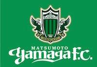
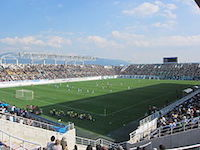

松本山雅FC
松本山雅FC（まつもとやまがエフシー、Matsumoto Yamaga Football Club）は、日本の長野県松本市、塩尻市、山形村、安曇野市、大町市をホームタウンとする、日本プロサッカーリーグ（Jリーグ）に加盟するプロサッカークラブ。登録チーム名は松本山雅フットボールクラブである。

アルウィン
ホームスタジアムは長野県松本平広域公園総合球技場（アルウィン）であり、Jリーグ加盟以降は全てのホームゲームを同所で開催している。アルウィンとは「アルプス」と「ウィンド」を掛け合わせた造語。
天然芝のグラウンドを持ち、サッカーの国際試合やＪリーグ公式戦も開催可能。サッカーの他、ラグビー・アメリカンフットボールなどにも利用ができる。